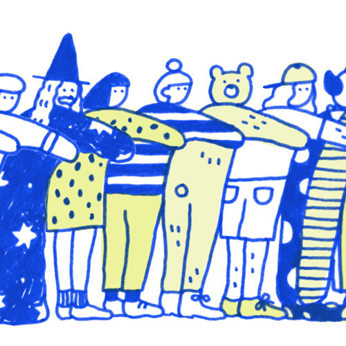
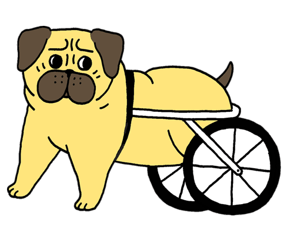

哈囉 穎詩，謝謝你的時間。我今天會問一些關於你和你對藝術設計的看法，如果有任何想說的就直接說
嗨! 好的沒問題，我很樂意幫忙。
你現在哪裡生活？
我現在在香港工作
你是做什麼工作的？可以形容一下你的一天嗎？
我白天是用戶體驗設計師，然後空閒的時候，為了好玩和賺錢，我有在畫插畫。 我在香港的一家本地公司擔任內部用戶體驗設計師，我的日常工作包括製作線框和為公司網站創建資產。 我還負責為公司擴展的Web應用程序制定UI準則。
下班後，我在空餘時間做插圖和繪畫，以彌補我在日常工作中無法使用的創造力。 從插畫的背景來看，我希望我可以花更多的時間做插圖，但是在一天結束的時候，插圖的自由職業者對於我住在像香港這樣的城市來說是不可持續的。
這是我在空餘時間畫的海報

妳還有其他的興趣愛好嗎？和你的作品有沒有關聯？
我有在街上看陌生人的習慣，觀察他們的行為，以及他們如何用自己的肢體語言來表達自己。 有時我會很快將它們繪製在記事本中。 我認為這有助於我弄清楚我想用我的繪畫與人交流。

身為一個設計師，你怎麼描述自己？有什麼理想或目標嗎？
我盡量保持開放態度。 靈感通常來自意想不到的地方。
我並沒有為我的生活設定任何目標，但如果我必須設定一個目標作為一個在創意領域工作的人，那就是要說服人們每個人都可以成為藝術家，而且對設計師來說沒有任何幻想 或藝術家:-)
從0到5，你覺得其他國家的人多了解香港的設計?
大概是2吧
妳可以跟我們分享你的作品嗎？
當然可以，我有自己的網站，這裡
謝謝！你的作品都很可愛而且很有趣，我很喜歡
謝謝！
妳對於香港的藝術以及設計有什麼看法呢？有哪些特別的嗎？
插圖很特別，因為它有很多變化/可能性。 它不同於通常用不同流派定義的精美藝術，如現實的繪畫，雕塑和混合媒體等。你不能真正把插圖放在一個盒子裡。 插圖可以同時對我很多東西。 例如，牆上的插圖變成了一幅壁畫，當你插圖時，它會變成動畫，當它被放在卡片上並包裝成消費品時。 如何使用插圖的可能性是無止境的，這就是為什麼我被它吸引的原因。 人們立即被視為視覺刺激的東西，並直接與任何正在看它的人交談。
那你覺得人們對香港藝術有哪些偏見呢？
就插圖而言，我認為人們不會認真對待它。 他們可能會認為插圖只是塗鴉，沒有什麼深度的。 事實上，在每個插圖中使用每個筆劃和顏色背後都有很多想法。
你的作品有被香港文化影響嗎？
我會說，我更喜歡周圍環境和個人經歷，而不是文化。 如果我住在一個不同的城市，我會受到那個城市的啟發，以及我如何體驗它。
妳覺得中西方的設計有什麼不同嗎？
我不認為我有專業知識來談論這個......但是如果我必須談論它，我的觀察是
特別是在香港，我認為人們在嘗試新的設計和想法時不太冒險，除非它被證明是成功的，否則他們不會做任何事情。 我認為這是一種影響人們思考設計如何完成的思維模式。 它更多的是設計應該如何，而不是如何。
我剛剛看了你的網站，看到了這個好可愛，是關於什麼的？

這是在Willamette週發表的一篇文章，談論帕格狗的健康問題。 這裡有更多的動圖



這些都好可愛，讓人很想去看
那有什麼香港的設計和藝術觀念是妳希望其他地區的人了解的？
我希望大家可以明智地使用插圖。 將插畫作為專業人士來對待，像是你如何對待其他學科的建築師和設計師一樣。
還有什麼關於妳的事情想讓大家知道呢？
我喜歡吃。
哈哈哈哈 我也是！吃是人生的動力！謝謝妳的參與。